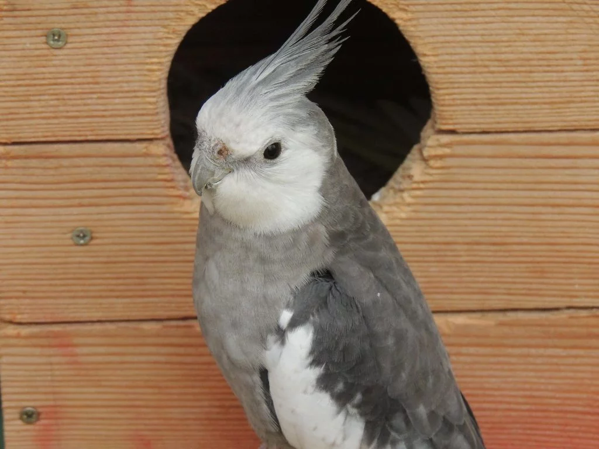
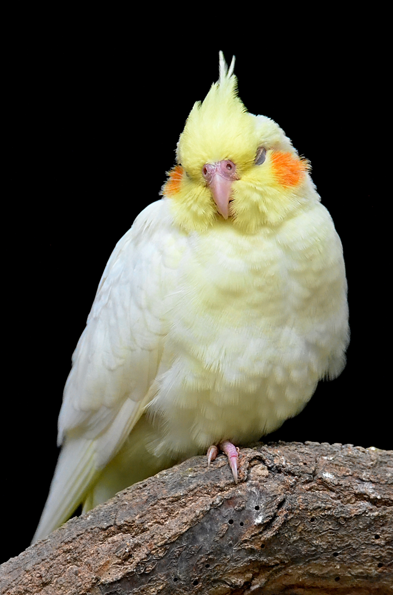

Existem mais de 20 mutações por aí e isso torna a criação da espécie ainda mais interessante e divertida. Confira a lista das principais variedades do pet:
Branca;
calopsita com a cara branca;
albina;
lutino;
amarela;
pérola;
azul;
cinza;
preta;
canela;
verde;
rosa;
vermelha;
calopsita reverso.
Viu? O que não falta é variedade! Mas você sabia que alguns tipos de calopsita são mais incomuns do que outros? Uma calopsita rara é a lutino cara branca, que é albina e, portanto, completamente branca.
E aí, qual a sua preferida?
Temperamento e comportamento

As calopsitas são pets muito sociáveis, e por isso entram na classificação das aves de contato. Essas são aquelas que gostam – e precisam – ficar fora do recinto, ganhar carinho dos tutores e interagir.
Os momentos de convivência com o seu tutor estão entre os passatempos preferidos da ave. Afinal, ela gosta de criar laços com aqueles que vivem ao seu redor e não gosta de ficar muito tempo sozinha. Sendo assim, ela não é o pet ideal para quem viaja muito ou passa o dia todo fora.
Elas adoram conversar com sua família – ou quase isso! Na verdade, quando você ouve a calopsita falando, ela está repetindo o que aprendeu ao imitar as pessoas. É o caso dos papagaios, por exemplo.
O mesmo vale quando se ouve uma calopsita cantando ou uma calopsita assobiando. Novamente, ela está repetindo algo que ouviu e aprendeu. Diferentemente de pássaros, como o canário, as nossas amigas de bochechas rosadas não têm um canto natural.
Já deu para perceber que todos esses comportamentos mostram como ela é uma ave extrovertida, agitada e que adora interagir. Contudo, para isso, é necessário treinamento.
Como adestrar a sua calopsita?
O ideal é iniciar o adestramento quando a calopsita é filhote. Até as 14 semanas de vida, a pequena ave está em sua maior fase de aprendizado, então o treinamento será mais fácil.
No entanto, isso significa que, se você adotar um adulto ao invés de um filhote de calopsita, ela não aprenderá? Nada disso! Essas são aves muito inteligentes e aprendem mesmo após crescerem. Inclusive, é recomendável ensinar truques e estimular o aprendizado e a interação durante toda a vida. Dessa forma, o pet vai manter a docilidade e também se distrair.
Isso é o ideal para quem quer ter uma calopsita mansa.
Doenças mais comuns em calopsitas

Ao ver a sua calopsita espirrando ou a sua calopsita vomitando, é muito importante levá-la a um médico-veterinário.
Confira a lista de doenças mais comuns nessa espécie:
ceratoconjuntivite;
ascaridiose;
coccidiose;
giardíase e outras infecções parasitárias;
aspergilose;
clamidiose.
Como saber o sexo da calopsita?
Não é possível identificar o sexo da calopsita através dos órgãos genitais, pois, no geral, esses são animais que não apresentam dimorfismo sexual. No entanto, existem características físicas capazes de diferenciar calopsita macho e fêmea.
Essas diferenças aparecem somente após os seis meses de vida. Agora veja os principais atributos de um macho e uma fêmea para descobrir o sexo.
As calopsitas fêmeas apresentam listras horizontais ou manchinhas na cor amarela na parte debaixo das penas que ficam na cauda. Os rostos são mais puxados para o cinza, e suas bochechas são mais claras.
Já a calopsita macho tem as bochechas mais amareladas e corpo mais acinzentado.
De todo modo, a recomendação é confirmar se o pet é macho ou fêmea com um veterinário especialista em aves por meio do teste de sexagem.
Dessa forma, você não tem preocupações na hora de arrumar mais um exemplar para que sejam companhia um do outro.
Esses são pets muito interessantes! Algumas mutações apresentarem dimorfismo sexual após um ano de vida.